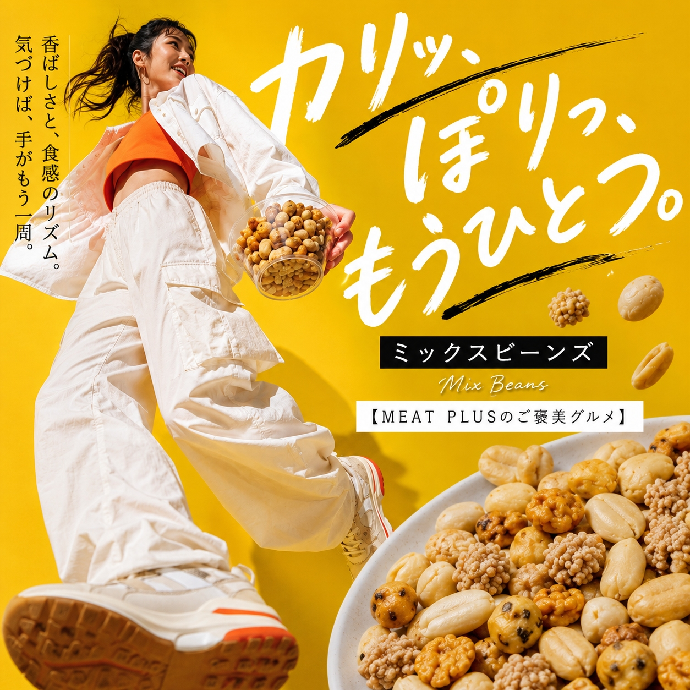
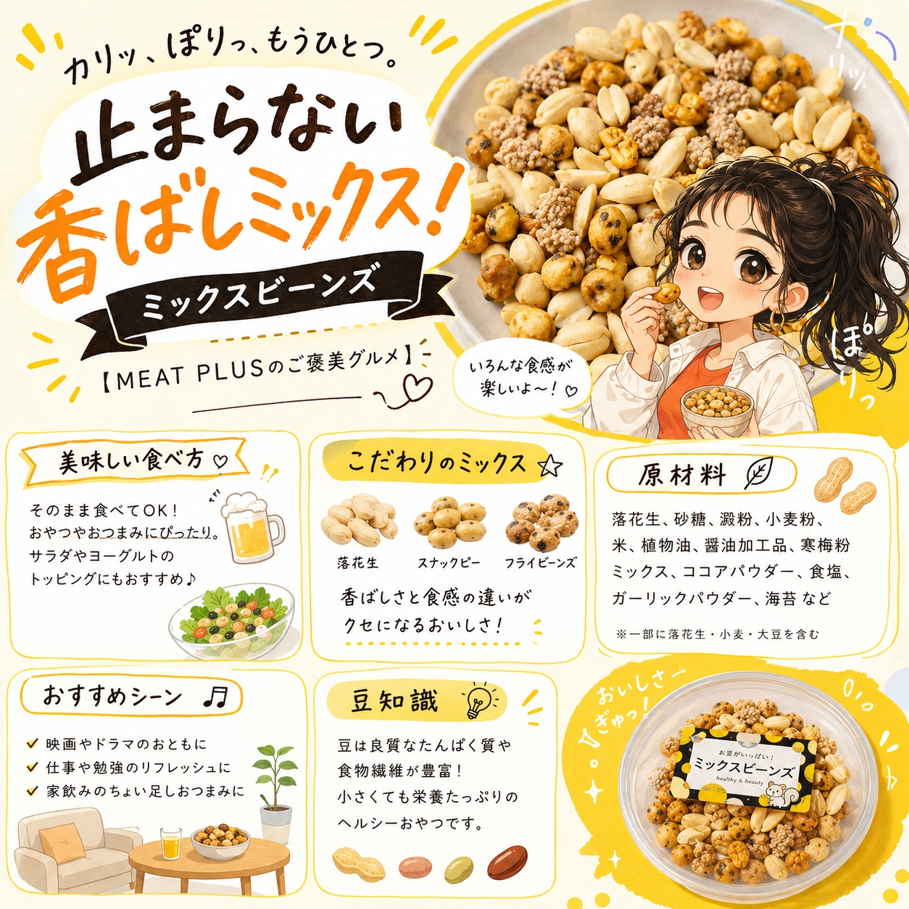

SCENE 01
k スイーツ・菓子
【カリッ、ぽりっ。甘辛食感いろいろ。止まらない、魅惑の豆菓子ミックス。】
テレビを見ながら、読書をしながら、ついつい手が伸びる。そんな至福のおやつタイムにぴったりの「ミックスビーンズ」をお届けします。香ばしい落花生をベースに、カリッとしたあられ、ほんのり甘い砂糖がけ、ピリッと風味豊かな醤油味など、個性豊かな豆菓子をぎゅっと詰め込みました。一口ごとに違う味と食感が楽しめるので、最後まで飽きることなくお楽しみいただけます。たっぷり270g入りなので、ご家族みんなで楽しむのはもちろん、ホームパーティーやお茶会でのおもてなしにも最適です。常温で保存できるので、キッチンにストックしておけば、小腹が空いた時や急な来客時にもさっと出せて便利。ビールやサワーのお供にすれば、最高の晩酌タイムに。カリッ、ぽりっと軽快な音とともに、笑顔が広がる食卓を。ぜひこの機会にお試しください。
公式サイトへ移動します。価格・在庫・配送条件は移動先で最終確認してください。


PRODUCT INFORMATION
落花生（中国）、砂糖、落花生（中国、アメリカ、その他）、澱粉、小麦粉、米、植物油、醤油加工品、寒梅粉ミックス、ココアパウダー、食塩、砂糖調製品、デキストリン、海苔、ガーリックパウダー、発酵調味料/加工澱粉、調味料（アミノ酸等）、着色料（カラメル、パプリカ、ベニコウジ）、甘味料（カンゾウ）、香辛料抽出物、（一部に落花生・小麦・大豆を含む）
FAQ
原材料の一部に落花生・小麦・大豆を含みます。アレルギーをお持ちの方は、必ず原材料表示をご確認の上、お召し上がりください。
開封後は湿気やすくなりますので、しっかりと蓋を閉めて、直射日光・高温多湿を避けて保管し、賞味期限にかかわらずお早めにお召し上がりください。
MEAT PLUS OFFICIAL SHOP
仕入れ・加工・梱包・発送まで自社で行うMEAT PLUSの公式オンラインショップでご注文いただけます。
公式オンラインショップで購入する